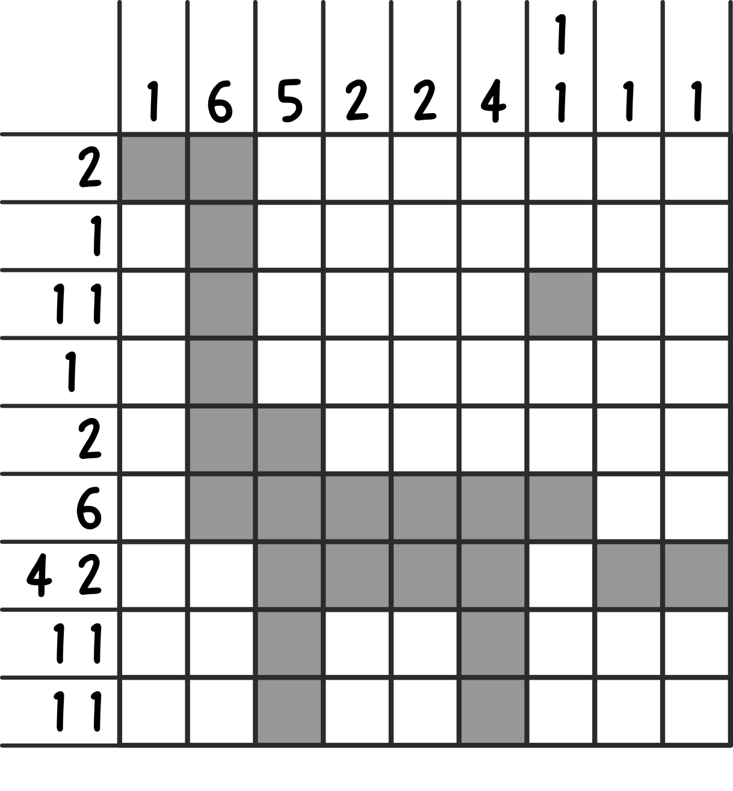
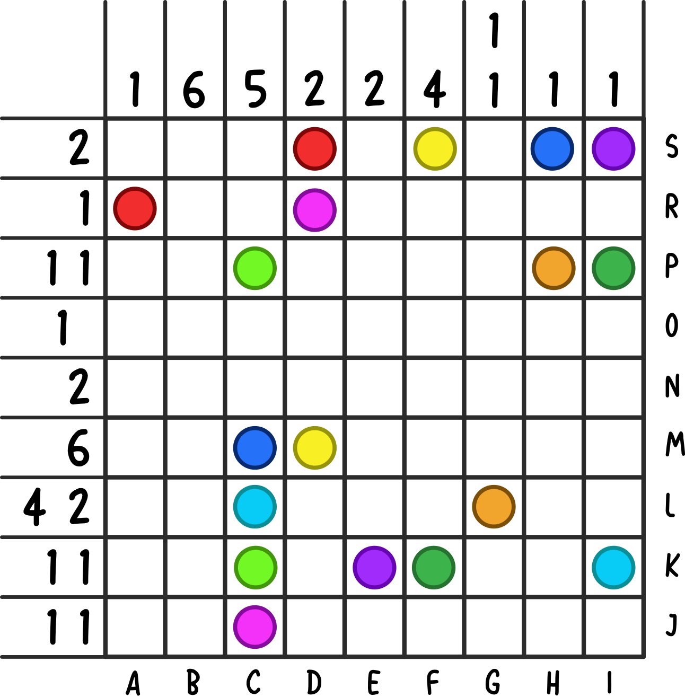
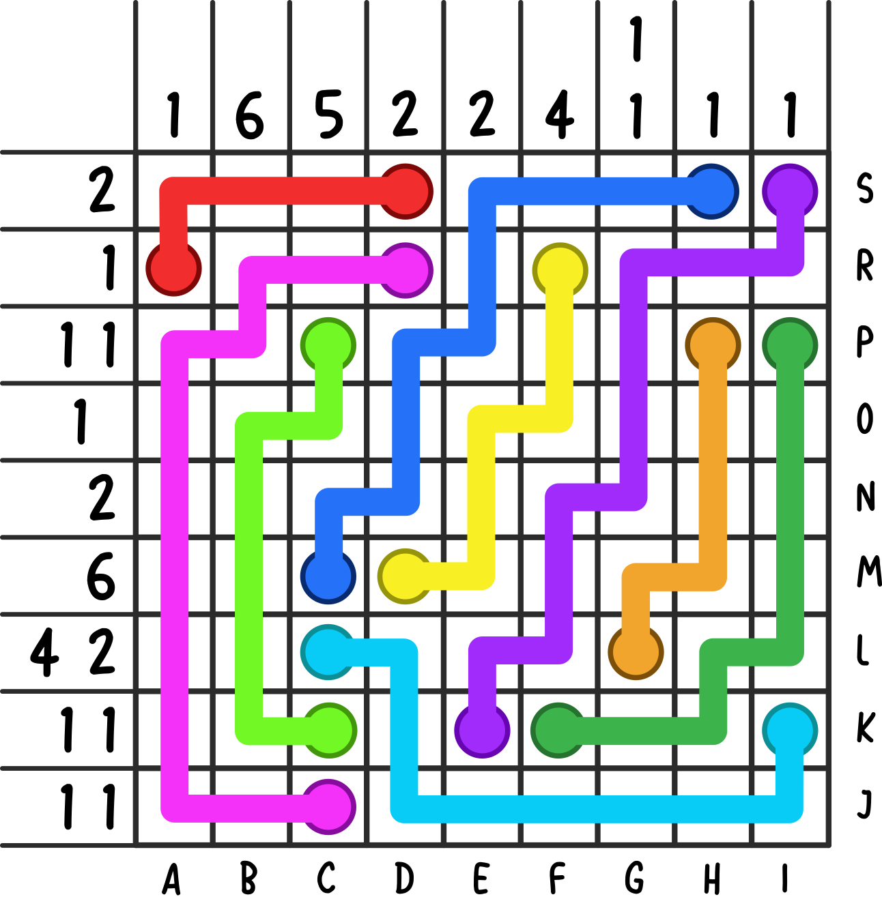
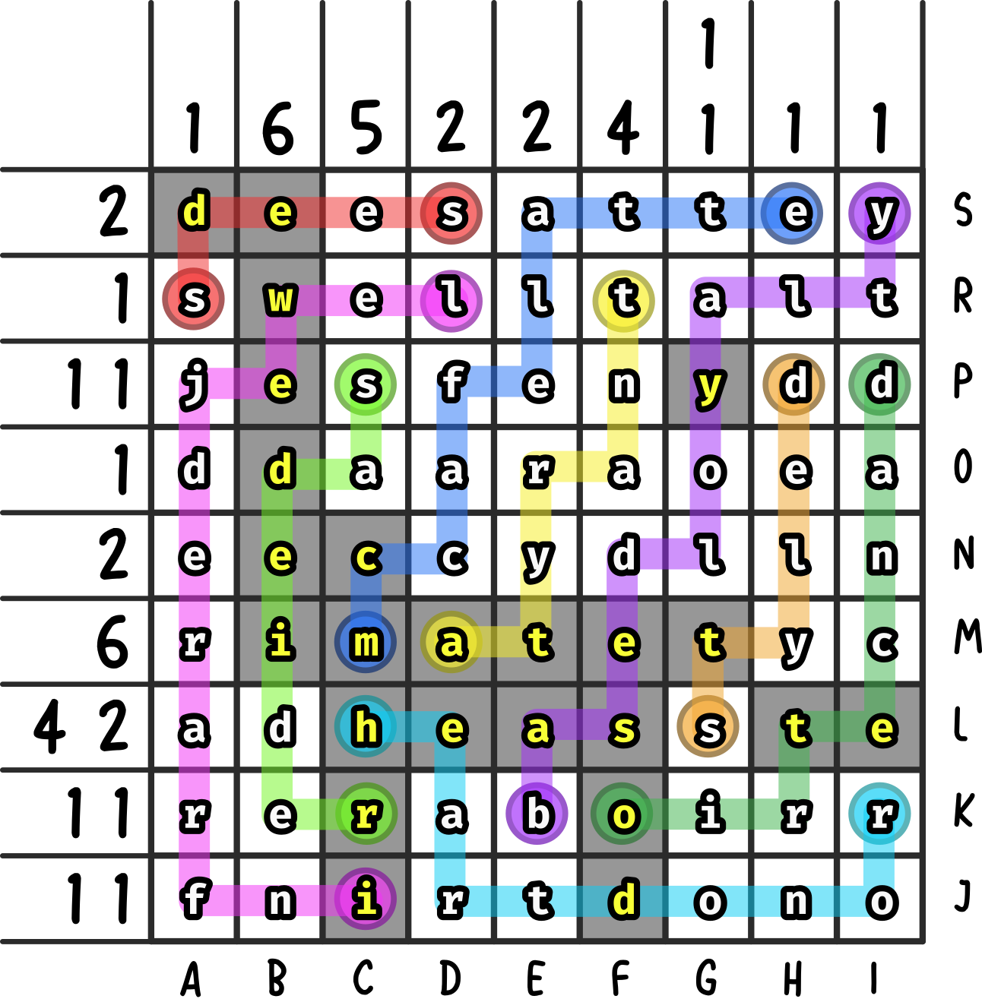

Solution: META: Jurassic Mark
Answer: DEWEYDECIMATETHEASTEROID
Written by Ethan
First, solve the nonogram. Thematically, it takes the shape of a dinosaur with an asteroid in the background.

"The End" section can also be solved. Each line is the definition of a dinosaur name, which matches with the number of blanks in each slot. From each dinosaur, extract the letters at the specified positions.
These letters serve as positions for the "end" dots in the grid. Putting the dots in the appropriate places gives the following.

We can now "connect the dots", similar to a Numberlink or the mobile game 'Flow'.

Each connecting line is a unique number of spaces long, ranging from 5-13. Also, each contributing puzzles' answer uniquely ranges from 5-13 letters.
We can fit each answer onto the line that has the same length, starting at the dots originally given and ending at the dots we added ("the end").
Overlaying the nonogram again, extract the letters that were in the same position as the solved nonogram, giving how to stop the asteroid: DEWEY DECIMATE THE ASTEROID.
Upon submissions, teams were redirected to the victory page.

Author’s Notes
I intended the title of 'mark' to be a pun on Jurassic Park, a reference to crayon marks, as well
as 'mark'ing the grid with connections/nonogram. This might have
gone over a couple people's heads, but hopefully it was not misleading to any
solvers. For getting the positions, perhaps it could have been a little more creative as just getting the letters
from certain spaces can be a little boring, especially for a meta concept.
As for construction, I started out with the answer; DEWEY DECIMATE was a pretty good pun
that we were happy to include.
Next came the flow/numberlink. To have an unambiguous extraction,
I decided on the most elegant approach I could think of at the time - increasing number of
lengths for connections. This determined the grid size, a 9x9. I created a sample
puzzle that would have this property, though I knew that this would change after creating
the nonogram.
After that, I created the nonogram - and I found out
that not all nonograms actually have unique solutions, which I found interesting.
I confirmed this nonogram's uniqueness by putting it into a nonogram solver as well as manually
going through the logic to fill the grid.
After filling the nonogram with the desired letters, my original connections didn't distribute the needed
letters equally. With some adjustments, I was able to create paths that would create reasonable
feeder answeres.
Though I wish this meta was a little more creative further than "use certain letters from feeder answers,"
hopefully the constraints still led it to be satisfying to solve. I'm also happy with the little "the end"
clue I was able to sneak in. Unfortunately,
the construction led to some green paint feeder answers.